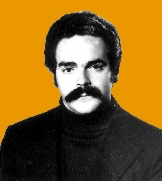

HOME FUNDEF
Manuel Antonio Ortiz
Manuel Antonio Ortiz
Venezolano, psicólogo, con especialización en Etnomusicología y Folklore. Entrenamiento profesional intensivo como Facilitador en Dinámicas de Grupo y Metodología Vivencial. Estudios formales de guitarra, viola y dirección de coral. Cursó Maestría en Historia de América Contemporánea.
Director de grupos corales en instituciones de educación media y superior. Psicólogo escolar y orientador. Creador de la Cátedra de Psicología de la Música en el Conservatorio de Música de Maracay y en el Departamento de Arte del Instituto Pedagógico de Caracas. Profesor de Educación Superior de las asignaturas: Sensibilización en Grupo, Dinámica de Grupo, Psicología de la Música, Apreciación Musical, Lenguaje y Percepción Musical, Folklore Aplicado a la Educación.
Por concurso de credenciales electo Director Nacional de Folklore (INAF-CONAC) 1978-85. Por elección directa, seleccionado jefe del Departamento de Arte del Instituto Pedagógico de Caracas, (IPC-UPEL) 1989-1992. Asesor de la Fundación Bigott en el área de la cultura popular, desde 1991.
Dirigió y supervisó el libro ``Diablos Danzantes de Venezuela``. Prologó el libro de Miguel Acosta Saignes ``La Cerámica de la Luna''. Ha publicado artículos relacionados con la música de tradición oral y la psicología de la música. Colaborador como autor de voces del Diccionario de la Música Española e Hispanoamericana, y de la Enciclopedia de la Música en Venezuela, ambos en preparación.
Recibió reconocimiento del Consejo Nacional de la Cultura por ``Meritoria Labor'' al frente del Instituto Nacional de Folklore, 1986. Designado por la Presidencia del CONAC como jurado principal del Concurso Nacional de Danzas Folklóricas, 1982. Ha sido asesor del Ministro- Presidente del CONAC como miembro del Consejo Consultivo de Danzas, 1984-87. Miembro del Consejo Asesor de la Revista Bigott, 1992-94.
Invitado oficial de Francia, Checoslovaquia, Hungría, Yugoslavia, y ex-Unión Soviética. Presidió la misión cultural en China.